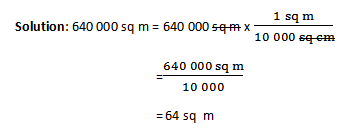
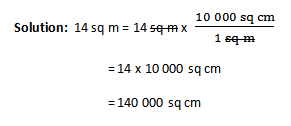

Lesson 60: Converting Square Centimeters to Square Meters and Vice-versa
 Explore and Discover!
Explore and Discover!
Explore and Discover!
Lian and Jay are busy cleaning the playground of Castro Elementary School. If the area of the school playground is 640 000 sq cm, what is the equivalent in square meters?
How will you solve the problem?
Study this:
10 000 sq cm = 1 sq m
640 000 sq cm = sq m
Study this example:
Lorena wanted to find out how many square centimeters there are in 14 sq m.
Help her to solve for the answer.
Below is the process to convert bigger square units to smaller square units.
1 sq m = 10 000 sq m
14 sq m = sq cm
